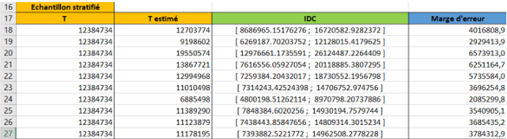
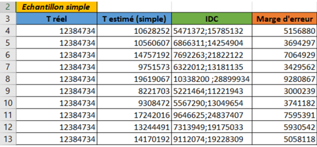
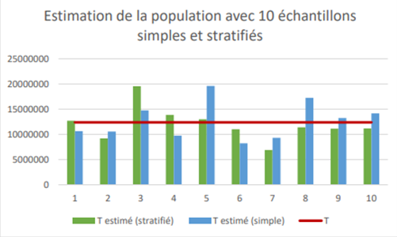
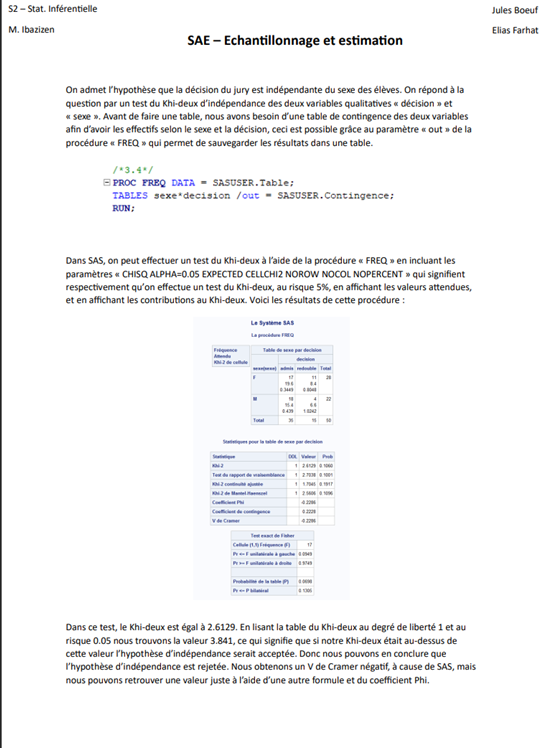

Estimation par échantillonnage
Ce projet avait pour objectif de mettre en œuvre différentes méthodes d’échantillonnages afin d’en comprendre leurs précisions et contextes d’usage. Ces échantillonnages nous ont permis d’estimer la population dans la région d’Ile-de-France (11). Cette estimation de la population s’accompagnait d’un intervalle de confiance et une marge d’erreur afin de pouvoir regarder la précision de nos résultats. Le travail s’est fait sur le logiciel de programmation statistique R, puis le rapport sur Word.
La première méthode d’échantillonnage utilisée était l’échantillonnage aléatoire simple, ce qui signifiait que chaque commune avait la même probabilité d’être tiré dans l’échantillon. La deuxième méthode d’échantillonnage était l’échantillonnage aléatoire stratifiée, où des strates (selon la taille de la population) avaient été créées afin que l’échantillon puisse tirer de manière égale dans chaque sous-groupe, ceci permettait de tirer un échantillon plus représentatif. Afin de comparer les deux méthodes d’échantillonnages, nous avons réalisé des graphiques afin de savoir quelle méthode était la plus précise.
En plus des estimations, nous avons dû réaliser et interpréter un test d’indépendance du Khi-deux pour tester l’existence d’un lien entre le sexe et les décisions de passage en seconde année d’un jeu de données sur une classe sur le logiciel SAS.
Compétences acquises :
- Utilisation des logiciel SAS et R
- Approfondissement de mes connaissances et apprentissage de la syntaxe de SAS et R
- Rédaction d’un rapport
- Compréhension de l’utilisation et des contextes d’usages des différentes techniques d’échantillonnage
- Calcul et interprétation d’un test du Khi-deux pour vérifier l’indépendance de deux variables
- Amélioration de mes compétences rédactionnelles
Illustrations


Pour chaque méthode d'échantillonnage, nous avons fait 10 estimations

Voici une comparaison des deux méthodes d'échantillonnage (simple et stratifiée)

Extrait de la page du rapport sur la partie du test du Khi-deux